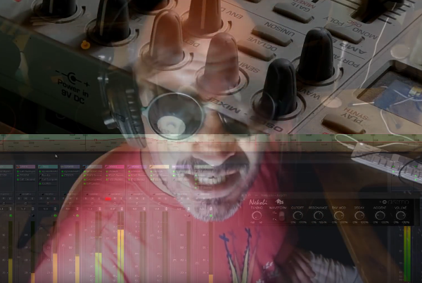

LMP Asks #21: An interview with Yassin Philip

Hi Yassin, thank you for taking the time to do this interview. Where do you live, and what do you do for a living?
Well, thank you! I'm French, born and raised in Paris. Right now I live in Casablanca, Morocco. What I do, let's see. Well, I'm a musician, so that's what I do. In those times where I have to take the pressure off the afferent, built-in impecuniousness, I do web design and various coding gigs, none currently. But even when I do, I'm humming my permanent tune.
Right now it's just music, I produce it and people help me on Patreon (thank you so much, people) and by buying my records, it comes with a lot of sacrifices, but I'm living my own personal bohemian rhapsody :) Besides, I'm done being rich, it's largely overrated.
By the way when I say "I produce" one has to picture a lot of time with a guitar on my lap, doing nothing but inane ego music. The last three months, all my unfinished tracks/songs went down the drain. I have a quite heavy composing process. But when I got something, like my hero Frank Zappa said, it's studio tan all the way :)
Apart from music and code, well, humans and animals. Social and nature interaction. I got my driving licence last year because of social and professional pressure, but never used it and forgot all about it in a matter of months, now it's expired I guess. Cabs are cheap in Casa.
What is your musical background?
Noise. Heavy metal first, then punk-rock and industrial music. My first bands were harsh noise projects in the spirit of Throbbing Gristle/PsyTV, Merzbow, Coil, Current 93, that sort of things. The fact that, at 16, 18 or so, we didn't know how to play any instrument (maybe basic percussion) helped a lot :) But then again, I always was "the melodic one" with the rhythm sense and the singing voice. After that I was lead singer / guitarist in a punk rock trio called "Minute" and we did a lot of gigs around Paris in the late 80s/ early 90s. Oh, and a 6 songs K7 album, my first time in a "pro" 24 tracks analog studio.
Then, in the early 90s I got a COMPUTER :) An Amiga 1200 (it still works at my daughter's with wifi, compact flash HD and even HDMI out!) and spent countless (and noisy) nights in Octamed, a 4-voices tracker (samples only, 12 bit ones) with which I (and friends) did a lot of industrial tech, and even some vinyl singles & EPs under the name "Pan". We never had the money for a real TR808. And the 4 tracks K7 tapes became digital files. Gigs and festivals became clubs and raves.
All that time, I kept a soft ear for melodies. The real deal, Erik Satie, Chopin, Brian Wilson and all that. The Pet Shop Boys blew my mind when I heard "Left to my own devices" on MTV. I still think Neil Tennant is one of the best songwriter of modern times. With Andy Partridge. And Martin Gore. Yes, I'm really into songs, verses, choruses, bridges, poetry, it's really my wheelhouse, where I like to be, and what I want to share with everybody now.
In 2007, after ten years working in IT (big exciting missions and even bigger boring meetings) I took my few stock-options and moved to Morroco and made a few gigs there, mostly in hotels and restaurants, some clubs, in an electro-folk duo called "Les Intouchables". We made an EP too, the last one I made outside of Linux. At that time, Qtractor was in its early infancy, and MIDI in Ardour wasn't even in the pipe.
What is your history with Linux and how did you find transitioning to it for audio production?
I got into Linux quite early, in 1998 when I joined a startup in Paris that was partners with Red Hat. But at that time - I guess Jackd didn't even exist - using Linux to record audio was out of the stereo panorama. I was using Ableton Live quite a lot, I still remember it fondly, it made using Windows 2K (I was double-booting Mandrake Linux in those days) almost a pleasure. I'd like to officially thank the Radium team for all those timely releases ;) And then, Qtractor was out. And while it was, at that time, really less polished than Live6, it felt like moving forward : I litterally felt the freedom, it knocked my socks off. And double-booting was now a thing of the past.
Linux, and its audio ecosystem and community, is a big deal for me. I don't care if anything happens in the proprietary world. I also need my Inkscape, Gimp and Blender around at all times, too. Everything I do on a computer, I do under Linux. Period.
What is your typical workflow when making music?
Ideally, I take my guitar or bass and compose/write a song, and I don't touch the recording gear as long as it's not fully finished and coherent, at least in my head ; But sometimes, like late at night, I just open Qtractor and click write notes into a bass line, jot some chords, and hum and record a cue lead voice with no lyrics, and work up from there. Or I play with synth presets and play keyboard, on which I suck big time, but I'm alone so it's OK.
Tell us a bit about your hardware set up
Currently, I use a small Intel NUC with a bottom-of-the-line core i5, with only 4Gb or RAM because I messed up with RAM voltages at buying time. My audio and MIDI interface is a M-Audio FastTrack Pro (in 24/44.1 settings) that is quite temperamental I must say. But when it works, it works.
I use a Fender Telecaster, a Fender acoustic folk 6 stringer, and an Ibanez G10 when I need humbucker sound. My bass is a GSR200 Ibanez (the cheap one) and I simply love it more than any bass I used before. I'm plugged right into the interface's preamps. I have amps, but it's just for gigging, miking amps is a job. I play standing up, and I sing in a D125AKG mic, I love that small (apparently vintage, I looked it up, I hardly remember trading a mixer for it in London in the late 80s, the Metal years) mic, it's a bit hard to use without popping noises but it sounds great.
I listen to all of that on Tannoy T60 speakers, and K240 AKG headphones.
What about the software?
Qtractor. Definitely my DAW of choice. With it and a few staples, like ZynAddSubFx or SynthV1, all the other tend to evolve as I discover new tools, like recently - it was more of a downright epiphany, BTW thanks to everybody on the Linux Audio Users Mailing List - Klangfalter and the whole IR world, and well, everybody literally heard it in my music. I use JAMin to master my final mixdown, and Audacity to record it.
But generally, I use a guitarix preamp (I tune my instruments with the GxTuner, too) a Calf compressor, an x42 eq, and off it goes to my reverb bus where lives Klangfalter, with Lexicon 480L files, and the "Auto Park" preset.
I use Blender to edit the videos. Also, I use my (tmux) terminal a lot. Like to cleanup the discarded takes, or to manage metadata, that kind of things. I maintain scripts to keep a constant ecosystem. I keep my current project in the cloud, in a synchronized directory, that way I can access it from everywhere, even on my phone. Oh, and finally I'd like to thank Emacs, without which life would be a lot less fun.
What music do you currently listen to?
Right now, I really like Tame Impala. Those last ten years I found a few new big musical endeavours that moved me, like the Super Furry Animals, from their first album on, or Lily Allen. But hey, there is so much music, more than I can chew ; There is generally something on the radio that I like somewhere and somehow ; My favorite band from all times, The Residents, is steadily releasing fantastic albums, so yes, everything, really. A lot of sacred music, too ; here in Morocco it's everywhere, at weddings, birthdays, it can be truly fantastic, like Gnawa music, Google it, I can't find the words. I have phases, like eveverybody has, like I spent the whole 2012 year listening to Sinatra, Chet Baker, and all that jazz. I'm still listening to a lot of noisy stuff, like nordic metal, real quiet, to work at night.
And I like a lot of one-song bands, little summer hits. I like techno and house a lot, and thank God I have friends with wide ears. And now we have YouTube. Hours of Live acts from the bands that I loved when I was a kid and magazines didn't have CDs in them. All them metal and prog-rock wonders. Some of my heroes are now following me on Twitter, digging my music, like Stan Ridgway or Sue Hadjopoulos, and that's fun, too.
Why do you feel open source is important, and what for you is the most important aspect of Linux audio?
Because I just don't trust proprietary code. Call me paranoid, but in reality I'm just lazy :) I like to know that somebody, somewhere, and preferably me, has read the code that I execute. But this is only one reason. I find the proprietary world a PITA of dongles, cracks download sites and talkative installers. I prefer to talk to the coding team through a bugtracker than to "contact technical services". I want to re-install a studio machine in one command that will pull everything I need ; I want to spend more time doing just music.
It's basic hygiene. I use FLOSS, I write FLOSS code, and that's it.
What do you feel is currently lacking in Linux audio?
Nothing. Really. We already have several flavors of everything : Audio and MIDI sequencers/DAWs, full channel dynamic effect strips, synths galore, an arpeggiator (why would we need two?) even free sound fonts and stuff, what do you want? Maybe a little additive synth would be nice. Ah yes, sorry, a flexible vocoder plugin. I can't find one that agrees with my sequencer's internal routing. That's a real lack, IMHO.
What is your favourite FLOSS plugin?
ZynAddSubFx. This synth blows my mind. Oh, and Klangfalter, the IR plugin that I use for my reverb bus. It's fantastic. But hey, I love every plugin that I use, and they're all Free, Libre Open Source Software.
Are there any FLOSS projects that you are excited about at the moment?
I find DrumGizmo a really cool endeavour. But generally speaking, everything in the Linux audio world makes me tick. The Musical Artifacts project is truly fantastic, specially the fact that it's integrated with Guitarix. I dream of it becoming a gigantic, ubiquous user-based preset bank : You login, your DAW/Synth connects to it and read / write your preset and patches seamlessly to the cloud. Then you make the preset public when you're finished fiddling with it ; When opening a synth, you'd have access to everybody's public presets ; How cool would that be?
What changes, if any, would you like to see within the Linux Audio community?
None. I hate changes ;p
What advice would you give to a new Linux Audio user?
Install a general distro, the one you like, because you'll probably use your machine for other stuff than strictly audio, and you want a big team behind your OS. Script every install procedure (packages, soundfonts, etc.) and keep your current project synced in the cloud. You never know when your HD is going to fry ; Hey, and watch my Qtractor tutorial videos (YouTube channel here), I wish they were around when I first started :)